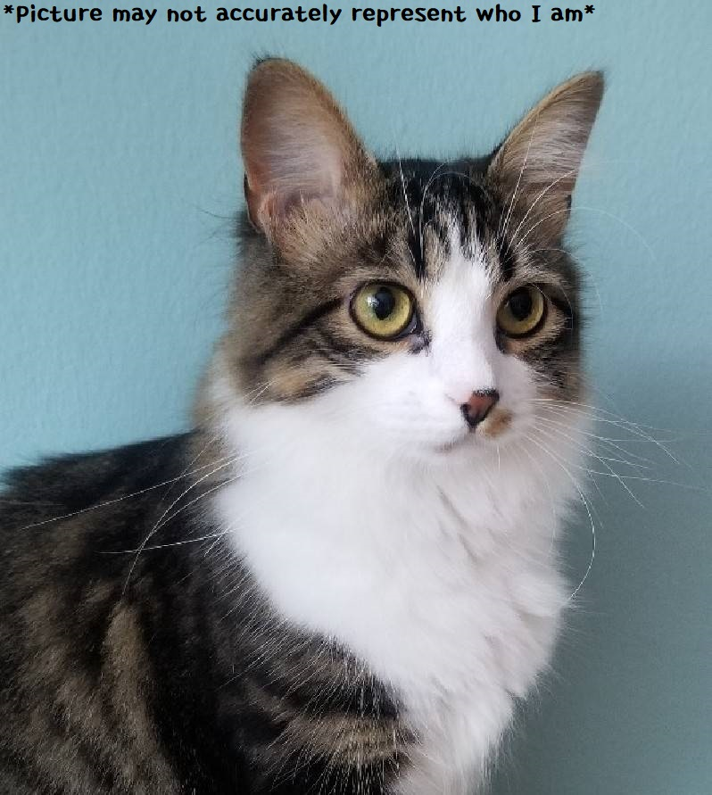

Resume

Yeonjun Cho
Passionate in Intellectual Property Law and Community Service. Currently studying coding with TTS.
Education
Bachelor's of Art in Japanese Language and Literature -
University of Virginia
- 08/2015 - 05/2019
- Major GPA 3.82
- Thesis: Research of the adoption of 創⽒改名 laws in Korea
Master's of Art in East Asian Studies -
University of Virginia
- 08/2019 - 05/2020
- GPA 3.931
- Thesis: Reconsidering Zainichi: modern perspective of Zainichi Koreans shown through Japanese film culture
Work Experience
Language Commons Graduate Associate
- 08/2019 – 07/2020
- Managed and collaborated with a diverse team of
undergraduate Language Commons assistants to lead
professional events and projects hosted by the Language
Commons.
- Worked with multiple Language faculties to utilize innovative
educational technologies for the enrichment of their
classroom environments. E.g. a VR project for studying foreign
languages
- Contact: Hope Fitzgerald – hf6v@virginia.edu
Student Project Associate - UVA Learning Design & Technology
- 12/2019 – 07/2020
- Provided technical support to the faculties and students
involved in one of the first implementations at UVA of a fully
remote global academic discussion using Zoom Video
Conference Software.
- Suggested and helped implement organizational
improvements to the classroom format which allowed for a
more productive experience for both the faculties and
students.
- Contact: Hope Fitzgerald – hf6v@virginia.edu
Awards
National Japanese Exam Bronze Award (2017)
- No Silver or Gold award was given that year
KCJS Governing Board Award (2018)
- Awarded to the student who demonstrated the most improvement in
Japanese language skill.
Member of National Japanese Honor Society (2019 – Present)
- Membership is given to 1 student for each school per year. Membership
eligibility is determined through internal selection process in the
department.
Languages
| Korean: |
Native Proficiency |
| Japanese: |
Professional/Working Proficiency |
 |
yc3dz@virginia.edu |
 |
571-598-2467 |